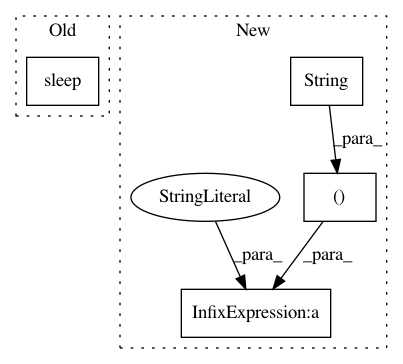

65af0876c5041dab41188586fbf8fdafa572dfec,pynets/graphestimation.py,,extract_ts_coords,#Any#Any#Any#Any#Any#Any#Any#Any#Any#,229
Before Change
if fast is True:
ts_within_nodes = extract_ts_coords_fast(node_size, conf, func_file, coords, dir_path)
else:
time.sleep(np.random.randint(1, 4))
//spheres_masker = input_data.NiftiSpheresMasker(seeds=coords, radius=float(node_size), allow_overlap=True,
// standardize=True, verbose=1, memory=Memory(cachedir="%s%s" % ("SpheresMasker_cache_", str(ID)), verbose=1),
// memory_level=1)
spheres_masker = input_data.NiftiSpheresMasker(seeds=coords, radius=float(node_size), allow_overlap=True,
After Change
else:
spheres_masker = input_data.NiftiSpheresMasker(seeds=coords, radius=float(node_size), allow_overlap=True,
standardize=True, verbose=1,
memory=Memory(cachedir="%s%s%s" % (dir_path, "/SpheresMasker_cache_", str(ID)), verbose=2),
memory_level=1)
// spheres_masker = input_data.NiftiSpheresMasker(seeds=coords, radius=float(node_size), allow_overlap=True,
// standardize=True, verbose=1)
In pattern: SUPERPATTERN
Frequency: 3
Non-data size: 4
Instances
Project Name: dPys/PyNets
Commit Name: 65af0876c5041dab41188586fbf8fdafa572dfec
Time: 2018-06-28
Author: dpisner@utexas.edu
File Name: pynets/graphestimation.py
Class Name:
Method Name: extract_ts_coords
Project Name: dPys/PyNets
Commit Name: 65af0876c5041dab41188586fbf8fdafa572dfec
Time: 2018-06-28
Author: dpisner@utexas.edu
File Name: pynets/graphestimation.py
Class Name:
Method Name: extract_ts_parc
Project Name: Pinafore/qb
Commit Name: f0323d19f5fd0bd3a4f78e394d6587b72bcc1d8e
Time: 2015-09-30
Author: jordanbg@gmail.com
File Name: util/buzzer.py
Class Name:
Method Name: